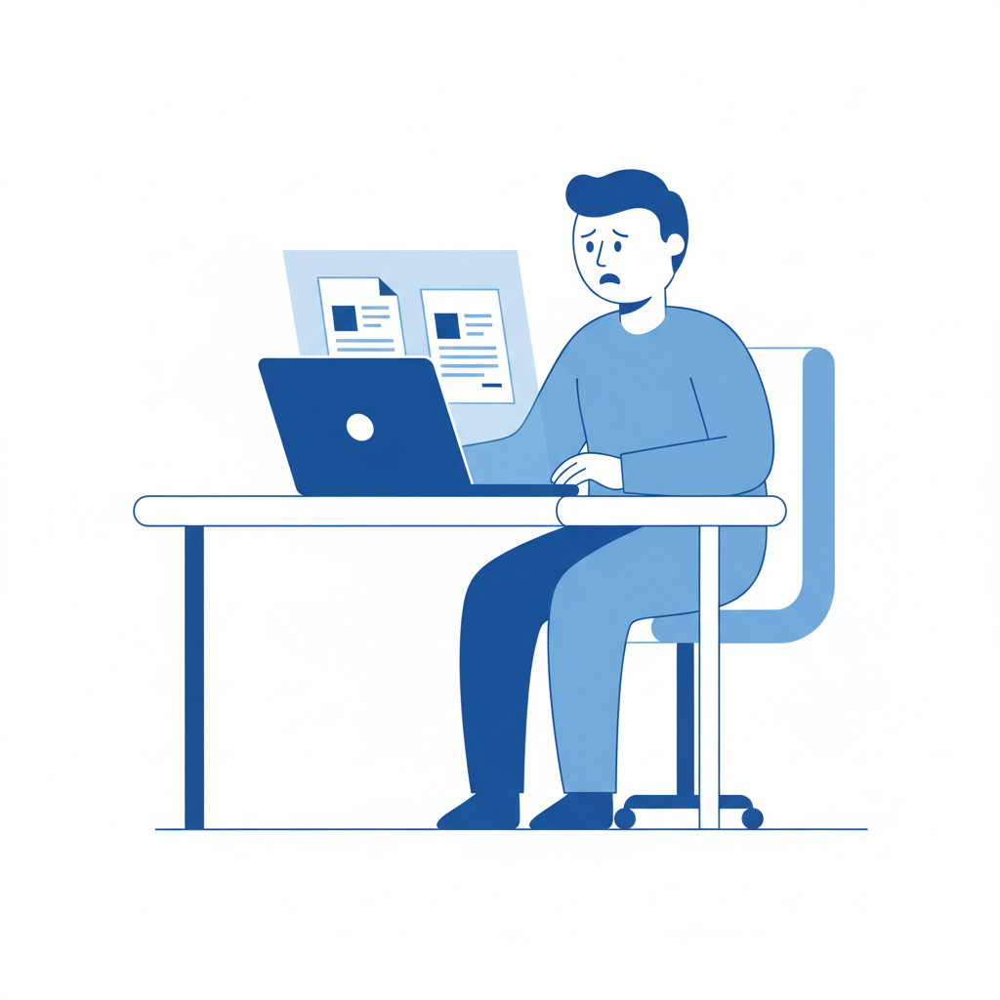
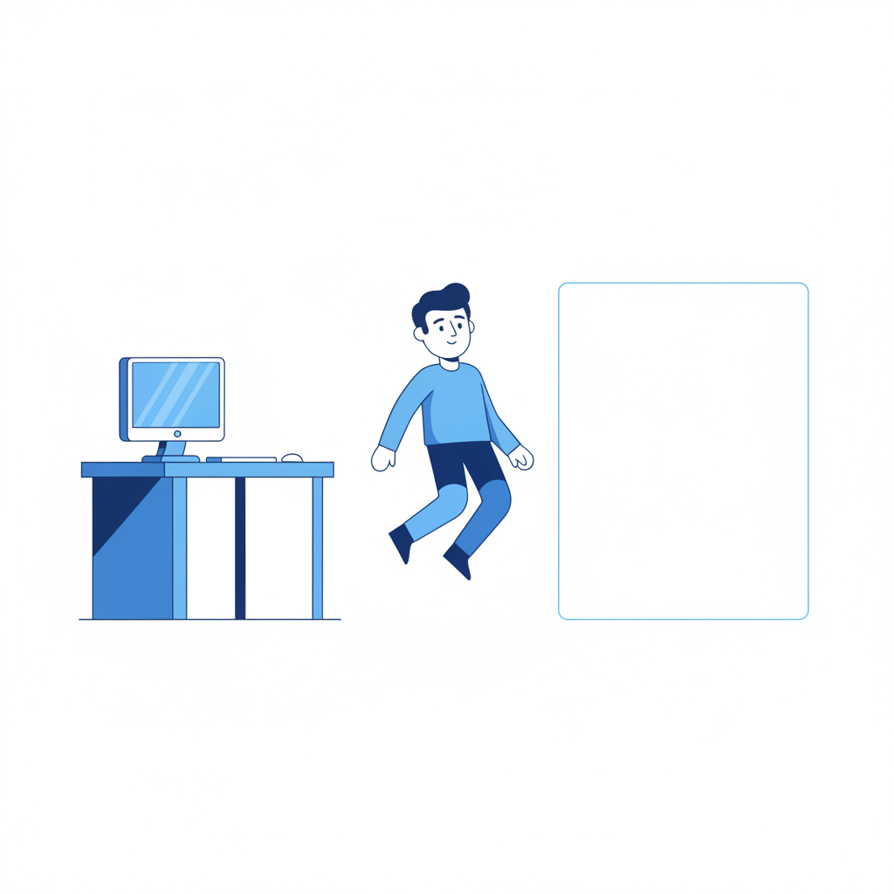

上周，一个做品牌咨询的朋友给我看了她收到的两份提案。一份是她的实习生花了整个周末写的，另一份是供应商用AI半小时生成的。
她对着两份方案看了很久，然后说了一句让我想了好几天的话："它们看起来一样好。那她那个周末算什么？"
这不是一个关于AI能力的故事。这是一个关于"证明"的故事。
过去一年，关于AI和工作的讨论铺天盖地。大多数讨论围绕一个问题展开：AI会不会替代我的工作？但我越来越觉得，这个问题把真正让人不安的事情遮住了。对于大多数知识工作者来说，工作还在。邮件还得写，方案还得出，周报还得交。AI没有把你从工位上赶走。
它做了一件更微妙的事——它让你做的所有这些事情，突然不再能证明什么了。

一、不是质量问题，是识别问题
2025年，Merriam-Webster把"slop"选为年度词汇。Stanford社交媒体实验室和BetterUp Labs联合造了一个更精确的词：workslop——那些AI生成的、看上去光鲜但推不动任何事情的工作内容。根据他们的调查，40%的美国白领在过去一个月收到过这种东西。
大多数关于workslop的讨论在说同一件事：AI生成的内容质量不够好，所以造成了浪费。员工平均每周花6小时修复AI犯的错误。一万人规模的公司，每年因此损失超过900万美元。
这些数字很触目，但它们对准的是错误的靶子。
我们可以这样来看：workslop之所以让人恼火，不完全是因为它写得烂。很多时候它写得并不烂。Arizona大学2025年做了一个实验——他们让人评价同一段文字，唯一的变量是标签：标注"人类写的"比标注"AI生成的"，信任度高出30%以上——文字内容完全相同。
这意味着人们对AI内容的抵触，不是一个质量判断，而是一个来源判断。你不安的不是"这段话写得不好"，而是"我不知道写这段话的人是不是真的在乎"。
BetterUp的数据佐证了这一点：收到workslop的人里，42%表示对发送者的信任下降了。不是对内容本身的信任——是对人的信任。超过三分之一的人认为发送者"不够聪明"。将近一半的人觉得对方"缺乏创造力"和"不可靠"。
人们在惩罚的不是低质量，是低诚意。
如果一个人用AI生成了一份方案，然后花了两小时仔细修改、核实数据、调整逻辑——这份方案的"诚意"够不够？还是说，只要AI参与了，诚意就打了折扣？
这个问题很难回答，它难的地方在于：我们过去从来不需要回答它。
二、你为什么需要一张大学文凭
1973年，经济学家Michael Spence提出了一个后来拿了诺贝尔奖的理论：学历的价值不完全在于你学到了什么，而在于它是一个"信号"。
你读完四年大学，雇主未必在乎你的微积分考了多少分。他在乎的是：你有能力坚持四年做一件困难的事。文凭是一张证书，但更深层的意义是一个证据——证据说的是"这个人能吃苦、能完成任务、能延迟满足"。
为什么信号有效？因为信号有成本。正是因为读大学要花四年时间和大量学费，所以"读完大学"才能传递出可信的信息。如果每个人都能花十块钱买一张毕业证，毕业证就不再说明任何事情了。
这个逻辑不只适用于文凭。在知识工作的日常里，你生产的每一份工作成果都在发送双重信息：一层是内容本身——这个方案的逻辑是什么、数据是什么、结论是什么；另一层是信号——"我花了时间研究这件事"、"我在乎这个项目"、"我有能力把复杂的东西理清楚"。
一封写得很认真的邮件，传递的不只是邮件里的信息，它还传递着"我重视跟你的这次沟通"。一份花了三天做的竞品分析，传递的不只是分析结果，它还传递着"我有独立思考和信息整合的能力"。
长期以来，这两层信息是捆绑在一起的。你无法伪造第二层——因为要生产出高质量的第一层，你必须真的投入时间和智力。内容质量本身就是诚意和能力的证明。
直到AI来了。
三、当成本归零，信号报废
AI做的事情，用信号理论的框架来看，异常清晰：它把生产知识工作成果的边际成本降到了接近零。
过去写一封得体的商务邮件需要十五分钟，现在十五秒。过去做一份像样的竞品分析需要三天，现在三十分钟。
内容的第一层——信息本身——依然在被传递。但第二层——"我花了时间和精力做这件事"的信号——消失了。因为做这件事不再需要花时间和精力。
一个具体的后果：文档的通货膨胀。Workday在2026年1月的调查发现，85%的员工说AI每周给他们省了1到7个小时。但这些省出来的时间去哪了？37%被返工吞掉了——员工平均每周花6小时修正AI的错误。更深层的变化是，当生产文档的成本降低时，组织的反应不是"太好了，大家可以少写一些"，而是"太好了，大家可以多写一些"。
2026年2月，NBER对近6000名高管的调查显示，89%的企业在过去三年没有感受到AI带来的生产力提升。McKinsey的数据更直白：大约80%的企业在用生成式AI，但大约80%没有看到显著的底线改善。
这不是AI不好用。这是一个典型的信号膨胀场景——当每个人都能低成本地生产"看起来不错"的工作成果时，"看起来不错"就不再说明什么了。就像当每个人都有大学文凭时，大学文凭的信号价值就打折了——于是人们开始卷硕士、卷博士、卷名校。
有人可能会说：那我就用AI当底稿，然后加上自己的判断和思考，生产出"真正好"的内容——这不就建立了新的信号吗？
理论上是的。但这里有一个实际困难：当你在一份AI生成的底稿上修改了30%，收件人能看出那30%是你的吗？大多数时候不能。你的判断淹没在AI的流畅表达里。你加的洞察被AI的标准化格式稀释了。
Stanford今年4月发布的一项研究揭示了一个更让人不安的趋势：他们追踪了超过20万美国家庭的ChatGPT使用数据，发现AI帮人处理"数字家务"（找工作、规划旅行、购物比价）的效率提升了76%到176%。但人们拿这些省出来的时间干了什么？刷Instagram、看Netflix、跟朋友闲逛。
不是因为人们懒。是因为当AI把那些"事务性工作"做完之后，人们突然发现——自己不太确定剩下的时间应该用来做什么。因为过去那些事务性工作虽然琐碎，但它们有一个隐性功能：让你觉得自己在"做事"。
四、悬浮：介于"被需要"和"被绕过"之间
项飙讲"悬浮"，讲的是人和自己的生活之间断了连接——你在做事，但你不知道自己为什么在做；你在一个地方，但你不觉得自己属于这里。
AI时代的知识工作者正在经历一种新的悬浮。
不是失业——工作还在。不是降薪——收入暂时没变。甚至不是能力贬值——你会的东西AI不一定会。但你有一种说不清楚的感觉：自己做的事情在变"轻"。不是工作量变轻了，恰恰相反——2026年的数据显示，88%报告了最高AI生产力收益的员工，同时也是最疲惫的那批人，辞职意愿是其他人的两倍。77%使用AI工具的员工说AI增加了他们的工作量，而不是减少了。
"轻"指的是分量感。你在做的事情不再感觉有分量了。
一个产品经理告诉我，她现在用AI生成竞品分析的初稿，自己修改后发给团队。效率确实高了。但她说："以前花三天做出一份分析报告，发出去的时候是有一种'这是我的作品'的感觉的。现在发出去——我自己都觉得那更像是AI的作品，我只是校对了一下。"
她不是在矫情。她描述的是一个真实的结构性变化：当工作产出的主要贡献者从人变成了AI，即使人仍然参与了过程（审核、修改、决策），人对自己工作的"所有权感"也在消解。
这种消解有一个隐蔽的连锁反应。BetterUp的研究发现了一条规律：当人们觉得自己的工作是"有意义的"，他们愿意投入更多。反过来，当AI介入让工作变得更有效率但更缺乏意义感时，人们的投入意愿也在下降。不是因为偷懒，是因为人需要一个理由来认真。
这种悬浮不是对称的。组织适应AI的速度比个人快得多。当一家公司发现AI可以让三个人干五个人的活，它的第一反应通常不是"太好了，让那三个人多休息一下"，而是"太好了，那我们可以只招三个人了"。员工省出来的时间，只有8%被重新投入到对员工自身有益的活动中——其余的被组织吸收了，变成了更高的产出要求。
这就是"悬浮"的具体含义：你被告知AI是你的工具、你的助手、你的效率倍增器。但你在日常工作中感受到的是——你越来越像AI的助手。你负责输入prompt、审核输出、点击发送。AI负责真正的"工作"。
有人可能会从更根本的层面质疑：人为什么要通过工作来"证明"自己？这本身是不是一种异化？工作本来就应该是做事本身有意义，而不是做事来给别人看。
这个质疑是对的。用"信号"来定义人和工作的关系，确实是一种工具理性的框架。但对于此刻坐在工位上的大多数人来说，这不是一个哲学问题。当你的工作不再能说明你的价值，你不会因此感到"终于不用被异化了"的解放——你感到的是一种具体的、每天的不安。旧的凭证失效了，新的还没建起来。你就悬在中间。

五、那个周末白花了吗
回到开头的故事。那个实习生花了一整个周末写的方案，和供应商用AI半小时生成的方案，看起来一样好。
她那个周末白花了吗？
在旧的信号系统里，答案是：是的。如果"方案质量"是唯一的衡量标准，那她花了四十倍的时间生产了同等质量的产出。这是纯粹的效率劣势。
但我后来又想了一下。那个周末里，她读了十几份行业报告，跟三个做过类似项目的朋友打了电话，推翻了自己的第一版思路，重新组织了逻辑。这些过程没有出现在最终的方案里。但它们出现在了她的脑子里。
她不只是在"写方案"。她是在建立自己对这个行业的理解、对这类问题的判断框架、对"什么是好方案"的直觉。这些东西不能被写进方案的某一页，但它们会出现在她下一次面对新问题时的反应速度和判断质量里。
AI跳过的恰恰是这个过程。它给你一个终点，但没有给你到达终点的路径。你拿到了一份"正确的"方案，但你没有经历过那个让你变得更强的挣扎。
所以问题也许不是"怎么让别人看到你的努力"。问题是：当AI让你可以跳过挣扎直达结果时，你是否还愿意选择挣扎？
这个问题不好回答。因为大多数人的工作环境不允许他们"选择挣扎"——老板要的是结果，不是过程。当隔壁同事用AI半小时搞定的东西你花了两天，绩效考核不会因为你"学到了更多"而给你加分。
我们现在面对的局面是这样的：一套沿用了几十年的价值证明方式正在失效——你做了什么、你做了多少、你做得多好，这些过去能清晰标示你价值的东西，正在变得模糊。而新的方式——能判断什么、能决策什么、能在AI做不到的地方创造什么——还没有形成被广泛接受的评价体系。
中间这段空白期，可能会持续很久。
我不认为这个问题有现成的答案。但有一件事越来越清楚：我们现在最需要想明白的，不是AI能做什么，是当AI做完之后，我们打算用自己来做什么。